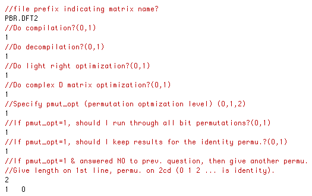

Modes of Operation and Parameters File
(Parameters File is called "qbtr-params.in")
We you run Qubiter, the first thing it does is to look for a parameter file
entitled "qbtr-params.in". This is an example of such a file:

Qubiter will skip lines 1, 3, 4, 6, 8, etc. For clarity, we have indicated
the lines that Qubiter skips by starting them with //, although Qubiter doesn't
care what they start with. Questions that require a boolean (yes or no) answer
should be answered by a 0 for no and 1 for yes.
MATNAME
The user should enter into the second line the name MATNAME of a matrix.
In the figure, we have used "PBR.DFT2" for MATNAME.
Compilation and Decompilation
If the user enters 1 into the 4th line as an answer to "Do compilation?",
then Qubiter will look for a file named "MATNAME.in". In other words, it
will look for a file whose name is the string in line 2 plus the suffix ".in".
Qubiter expects to find in this file the entries of the unitary matrix
Uinitial to be decomposed. The file should be of the form discussed
in the section entitled "Matrix Entries File".
If the user enters 1 into line 6 as an answer to "Do decompilation?", then
Qubiter will look for a file named "MATNAME-engl.out". Qubiter expects this
to be a plain SEO file. (See section entitled "SEO Files").
Qubiter has 2 main modes of operation as far as compilation/decompilation
is concerned.
The first mode of operation is when the user answers:
-
Do compilation? yes
-
Do decompilation? yes
In this mode, the user must provide 2 input files entitled "qbtr-params.in"
and "MATNAME.in". Qubiter will output a file called "MATNAME-engl.out". Then
it will use "MATNAME-engl.out" as input, multiply the SEO listed in this
file, arrive at a unitary matrix Ufinal, and output a file called
"MATNAME-chk.out" that lists the entries of Ufinal. It will also
output a file called "MATNAME-err.out" that list the entries of the difference
matrix Delta = Uinitial - Ufinal . If everything goes
well, the matrix Uinitial specified by file "MATNAME.in" and the
matrix Ufinal specified by file "MATNAME-chk.out" will be the
same matrix(within machine precision), and the matrix Delta will be zero
(within machine precision).
The second mode of operation is when the user answers:
-
Do compilation? no
-
Do decompilation? yes
In this mode, the user must provide 2 input files entitled "qbtr-params.in"
and "MATNAME-engl.out". Qubiter will multiply the SEO listed in
"MATNAME-engl.out", arrive at a unitary matrix Ufinal, and output
a file called "MATNAME-chk.out" which lists the entries of Ufinal
.
Optimizations
-
Do light right optimization?(0,1) (1 is recommended)
If the user answers 1 to this, then Qubiter will lighten the right side matrices
whenever it does a CSD.
-
Do complex D matrix optimization?(0,1) (1 is
recommended) If the user answers 1 to this, then Qubiter will extract phase
factors from complex D matrices before doing a CSD.
-
Specify pmut_opt (permutation optimization level)
(0,1,2)
-
If the user answers 0 to this, then Qubiter will do no permutation optimization.
-
If the user answers 1 to this, Qubiter will decompose into a SEO one or more
bit permutations of the matrix Uinitial being decomposed.
-
If the user answers 2 to this, Qubiter1.1 will abort because this is not
yet implemented. In the future, levels 2 and higher of this optimization
will do bit permutations at all nodes of the CSD tree, not just the root
one.
-
If pmut_opt=1, should I run through all bit
permutations?(0,1) If pmut_opt=0 (i.e., answer to previous question
is no), then the answer to this question is irrelevant. If pmut_opt=1,
then:
-
If the user answers 0 to this, then Qubiter will run through just one bit
permutation of Uinitial .
-
If the user answers 1 to this, then Qubiter will run through all bit permutation
of Uinitial . It will output an extra file called "MATNAME-pmut.out"
that gives the length of the SEO obtained for each permutation.
-
If pmut_opt=1, should I keep results for the identity
permu.?(0,1) If pmut_opt=0, then the answer to this question is
irrelevant. If pmut_opt=1, then:
-
If the user answers 0 to this, then the "MATNAME-engl.out" file outputted
by Qubiter will contain a SEO for the bit permutation of
Uinitial specified in the next question.
-
If the user answers 1 to this, then the "MATNAME-engl.out" file outputted
by Qubiter will contain a SEO for the identity bit permutation of
Uinitial (i.e., for an unpermutted Uinitial ).
-
If pmut_opt=1 & answered NO to prev. question, then
give another permu. Give length on 1st line, permu. on 2cd (0 1 2 ... is
identity). If pmut_opt =0, then the answer to this question is irrelevant.
If pmut_opt = 1 but the answer to the previous question is YES, then the
answer to this question is irrelevant. Otherwise, this question is answered
by specifying a bit permutation . The first line of the answer is the number
of bits NB of Uinitial. The next line should be a
permutation of the set {0, 1, 2, ..., NB-1}. For example, for
2 bits, there are 2 permutations "0 1" and "1 0", where "0
1" is interpreted as the identity permutation.
[Table Of Contents]